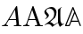

MathML Fundamentals
Elements and attributes
The term MathML element refers to any element in the MathML namespace. The MathML element defined in this specification are called the MathML Core elements and are listed below. Any MathML element that is not listed below is called an Unknown MathML element.
- <annotation>
- <annotation-xml>
- <maction>
- <math>
- <merror>
- <mfrac>
- <mi>
- <mmultiscripts>
- <mn>
- <mo>
- <mover>
- <mpadded>
- <mphantom>
- <mprescripts>
- <mroot>
- <mrow>
- <ms>
- <mspace>
- <msqrt>
- <mstyle>
- <msub>
- <msubsup>
- <msup>
- <mtable>
- <mtd>
- <mtext>
- <mtr>
- <munder>
- <munderover>
- <none>
- <semantics>
The grouping elements are <maction>, <math>, <merror> <mphantom>, <mprescripts>, <mrow>, <mstyle>, <none>, <semantics> and unknown MathML elements.
The scripted elements are <mmultiscripts>, <mover>, <msub>, <msubsup>, <msup>, <munder> and <munderover>.
The radical elements are <mroot> and <msqrt>.
The attributes defined in this specification have no namespace and are called MathML attributes:
- Global attributes
- Legacy
mactionattributes moattributesmpaddedattributesmspaceattributesmunderoverattributesmtrattributesencodingdisplaylinethickness
The Top-Level <math> Element
MathML specifies a single top-level or root
<math> element, which encapsulates each
instance of MathML markup within a document. All other MathML content
must be contained in a <math> element.
The <math>
element accepts the attributes described
in as well as the
following attribute:
The
display
attribute, if present,
must be an
ASCII case-insensitive
match
to block or inline.
The user agent stylesheet
described in
contains rules for this attribute that affect the
default values for the display
(math or inline-math)
and math-style
(normal or compact) properties.
If the display
attribute is absent or has an invalid value, the User Agent
stylesheet treats it the same as inline.
If the element does not have its computed
display property equal to
math or inline-math
then it is laid out according to the CSS specification where
the corresponding value is described.
Otherwise the layout algorithm of the
<mrow> element is used to produce a
box. That MathML box is used as the content for the layout of
the element, as described by CSS for display: block
(if the computed value is math) or
display: inline
(if the computed value is inline-math).
Additionally, if the computed
display property is equal to
math then that MathML box is rendered horizontally
centered within the content box.
$...$
and inline mode $...$ correspond to
display="block" and display="inline"
respectively.
In the following example, a <math> formula is rendered in display mode on a new line and taking full width, with the math content centered within the container:

As a comparison, the same formula would look as follows in
inline mode. The formula is embedded in the paragraph of text
without forced line breaking.
The baselines specified by the layout algorithm of the
<mrow> are used for vertical
alignement. Note that
the middle of sum and equal symbols or fractions are all aligned,
but not with the alphabetical baseline of the surrounding
text.

Because good mathematical rendering requires use of mathematical
fonts, the
user agent stylesheet
should set the
font-family
to the
math
value on the <math> element instead of inheriting
it. Additionally, several CSS properties that can be set on
a parent container such as
font-style, font-weight,
direction or text-indent etc
are not expected to apply to the math formula and so the
user agent stylesheet
has rules to reset them by default.
Types for MathML Attribute Values
- unsigned-integer
- An
<integer-value>value as defined in [[CSS-VALUES-3]], whose first character is neither U+002D HYPHEN-MINUS character (-) nor U+002B PLUS SIGN (+). - length-percentage
- A
<length-percentage>value as defined in [[CSS-VALUES-3]] - color
- A
<color>value as defined in [[CSS-COLOR-3]] - boolean
- A string that is an
ASCII case-insensitive
match to
trueorfalse.
Global Attributes
The following attributes are common to and may be specified on all MathML elements:
Attributes common to HTML and MathML elements
The
id,
class,
style,
data-*,
nonce and
tabindex
attributes have the same syntax and semantic as defined for
id,
class,
style,
data-*,
nonce and
tabindex
attributes on HTML elements.
The
dir
attribute, if present,
must be an
ASCII case-insensitive match
to ltr or rtl.
In that case, the user agent is expected to treat the attribute as a
presentational hint setting the element's
direction
property to the corresponding value.
More precisely, an
ASCII case-insensitive match
to rtl is mapped to rtl while
an ASCII case-insensitive match to ltr is mapped to ltr.
rtl in Arabic speaking world.
However, languages written from right to left often embed math
written from left to right and so the
user agent stylesheet resets
the
direction
property accordingly on the <math>
elements.
In the following example, the dir attribute is used to render "𞸎 plus 𞸑 raised to the power of (٢ over, 𞸟 plus ١)" from right-to-left.

All MathML elements support event handler content attributes, as described in event handler content attributes in HTML.
All event handler content attributes noted by HTML as being supported by all HTMLElements are supported by all MathML elements as well, as defined in the MathMLElement IDL.
Legacy MathML Style Attributes
The
mathcolor
and
mathbackground
attributes, if present, must
have a value that is a color.
In that case, the user agent is expected to treat these attributes as a
presentational hint setting the element's
color and
background-color
properties to the corresponding values.
The mathcolor attribute describes the foreground fill
color of MathML text, bars etc
while the mathbackground
attribute describes the background color of an element.
The
mathsize
attribute, if present, must
have a value that is a valid length-percentage.
In that case, the user agent is expected to treat the attribute as a
presentational hint setting the element's
font-size
property to the corresponding value.
The mathsize property indicates indicates the desired height
of glyphs in math formulas but also scale other parts (spacing, shifts,
line thickness of bars etc) accordingly.
The mathvariant attribute
The
mathvariant
attribute,
if present, must be an
ASCII case-insensitive
match to one of:
normal,
bold,
italic,
bold-italic,
double-struck,
bold-fraktur,
script,
bold-script,
fraktur,
sans-serif,
bold-sans-serif,
sans-serif-italic,
sans-serif-bold-italic,
monospace,
initial,
tailed,
looped, or
stretched.
In that case, the user agent is expected to treat the attribute as a
presentational hint setting the element's
text-transform
property to the corresponding value.
More precisely, an
ASCII case-insensitive match
to normal is mapped to none
while any other valid value is mapped to its
ASCII lowercased value,
prefixed with math-.
The mathvariant attribute defines logical classes of token
elements. Each class provides a collection of typographically-related
symbolic tokens with specific meaning within a given mathematical
expression.
For mathvariant values other than normal,
this is done by using glyphs of
Unicode's Mathematical Alphanumeric Symbols.
In the following example, the mathvariant attribute is used to render different A letters. Note that by default variables use mathematical italic.
mathvariant values other than normal
are implemented for compatibility with full MathML and legacy editors that can't access characters in Plane 1 of Unicode. Authors are encouraged to use the corresponding Unicode characters.
The normal value is still important to cancel automatic
italic of the <mi> element.
salt or
ssXY properties from [[OPEN-FONT-FORMAT]]
to provide both styles. Page authors may use the
font-variant-alternates property with corresponding OpenType font features
to access these glyphs.
The displaystyle and scriptlevel attributes
The
displaystyle
attribute, if present, must have a value that is a boolean.
In that case, the user agent is expected to treat the attribute as a
presentational hint setting the element's
math-style
property to the corresponding value.
More precisely, an
ASCII case-insensitive match
to true is mapped to normal while
an ASCII case-insensitive match to false is mapped to compact.
This attribute indicates whether formulas should try to minimize
the logical height (value is false) or not
(value is true) e.g. by changing the size of content or
the layout of scripts.
The
scriptlevel
attribute, if present, must have value
+<U>, -<U> or <U>
where <U> is an
unsigned-integer.
In that case and if the mathsize attribute is absent,
the user agent is expected to treat the scriptlevel
attribute as a
presentational hint setting the element's
font-size
property to the corresponding value.
More precisely,
+<U>, -<U> and
<U>
are respectively mapped to
scriptlevel(add(<U>))
scriptlevel(add(<-U>))
and scriptlevel(<U>).
displaystyle and scriptlevel values
are automatically adjusted within MathML elements.
To fully implement these attributes, additional CSS properties must be
specified in the user agent stylesheet
as described in .
In this example, a <munder>
element is used to attach a
script "A" to a base "∑". By default, the summation
symbol is rendered with the font-size inherited from its
parent and the A as a scaled down subscript.
If displaystyle is true, the summation symbol is drawn
bigger and the "A" becomes an underscript.
If scriptlevel is reset to 0 on the "A", then it will
use the same font-size as the top-level math root.

\displaystyle, \textstyle,
\scriptstyle, and \scriptscriptstyle correspond
to displaystyle and scriptlevel as
true and 0,
false and 0,
false and 1,
and false and 2, respectively.
Integration in the Web Platform
HTML and SVG
When parsing HTML documents user agents must treat any tag name corresponding to a MathML Core Element as belonging to the MathML namespace.
Users agents must allow mixing HTML, SVG and MathML elements as allowed by sections HTML integration point, MathML integration point, tree construction dispatcher, MathML and SVG from [[HTML]].
When evaluating the SVG
requiredExtensions
attribute, user agents must claim support for the language extension
identified by the
MathML namespace.
In this example, inline MathML and SVG elements are used inside
a HTML document. SVG elements <switch> and
<foreignObject> (with
proper <requiredExtensions>) are used to
embed a MathML formula with a text fallback, inside a diagram.
HTML input element is used within the
<mtext>
include an interactive input field inside a mathematical
formula.

-
The
<math>element can be used at position permitted for flow content (e.g. a<foreignObject>element) or phrasing content. -
Any
phrasing content
can be used inside
<mi>,<mo>,<mn>,<ms>and<mtext>elements. -
The
<svg>element can be used inside<annotation-xml>elements. -
Any flow content
can be used inside
<annotation-xml>elements with encodingapplication/xhtml+xmlortext/html.
CSS styling
User agents must support various CSS features mentioned in this specification, including new ones described in . They must follow the computation rule for display: contents.
In this example, the MathML formula inherits the CSS color of its
parent and uses the font-family specified via the
style attribute.

All documents containing MathML Core elements must include CSS rules described in as part of user-agent level style sheet defaults.
The following CSS features are not supported and must be ignored:
- Vertical math layout:
writing-modeis treated ashorizontal-tbon all MathML elements. -
Line breaking inside math formulas:
white-spaceis treated asnowrapon all MathML elements. -
Sizes:
width,height,inline-sizeandblock-sizeare treated asautoon elements with computed display valuemathorinline-math. -
Floats:
floatandclearare treated asnoneon all MathML elements. -
Alignment properties:
align-content,justify-content,align-self,justify-selfhave no effect on MathML elements.
DOM and Javascript
User agents supporting Web application APIs must ensure that they keep the visual rendering of MathML in synchronization with the [[DOM]] tree.
All the nodes representing MathML elements in the DOM
must implement, and expose to scripts, the following
MathMLElement interface.
The
GlobalEventHandlers,
DocumentAndElementEventHandlers and
HTMLOrForeignElement interfaces are defined in
[[HTML]].
The
ElementCSSInlineStyle
interface is defined in [[CSSOM]].
Each IDL attribute of the
MathMLElement interface
reflects the
corresponding MathML
content attribute.
In the following example, a MathML formula is used to render the fraction "α over 2". When clicking the red α, it is changed into a blue β.

MathMLUnknownElement interface?HTMLElement includes ElementCSSInlineStyle;
to the [[CSSOM]] specification.
Text layout
Because math fonts generally contain very tall glyphs such as big integrals, using typographic metrics is important to avoid excessive line spacing of text. As a consequence, user agents must take into account the USE_TYPO_METRICS flag from the OS/2 table [[OPEN-FONT-FORMAT]] when performing text layout.
Focus
MathML provides the ability for authors to allow for
interactivity in supporting interactive user agents
using the same concepts, approach and guidance to
Focus
as described in HTML, with modifications or
clarifications regarding application
for MathML as described in this section.
When an element is focused, all applicable CSS focus-related pseudo-classes as defined in CSS Selectors apply, as defined in that specification.
The contents of embedded <math> elements
(including HTML elements inside token elements),
contribute to the sequential focus order of the containing owner HTML
document (combined sequential focus order).